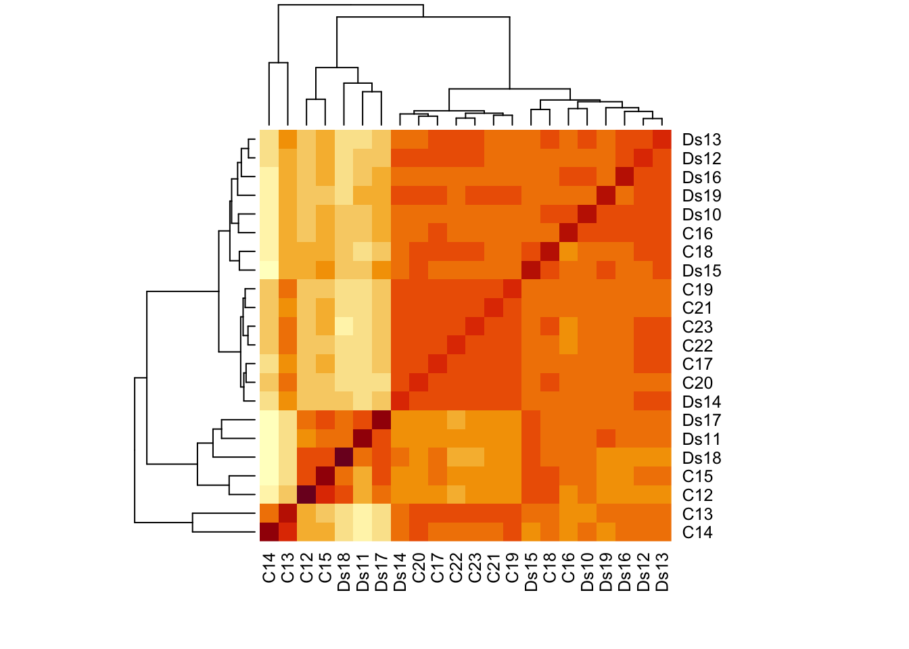
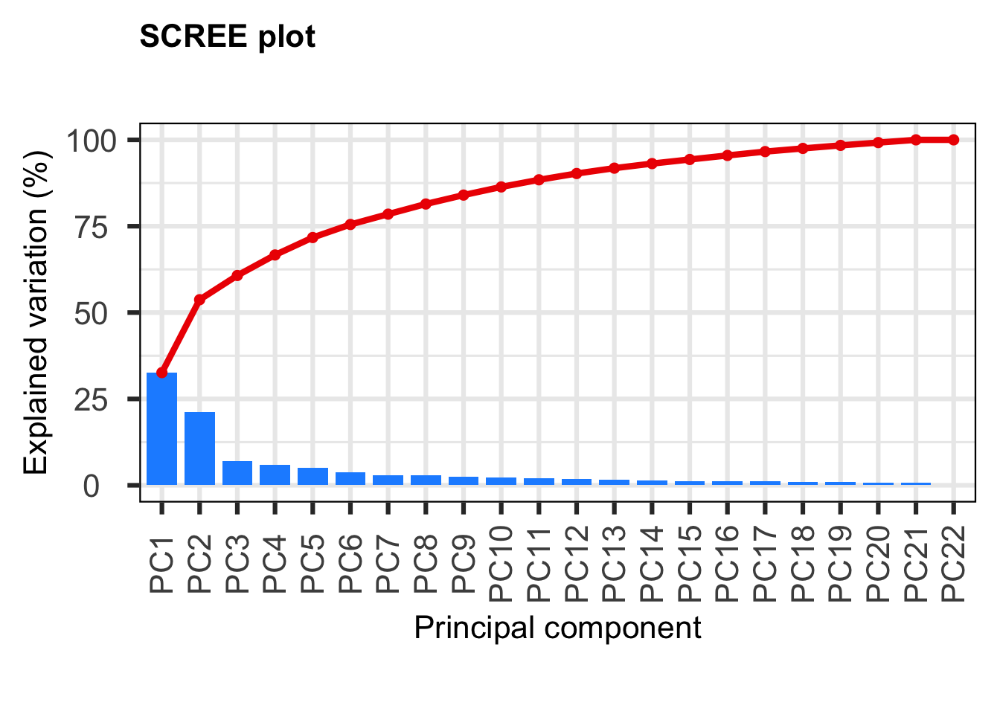
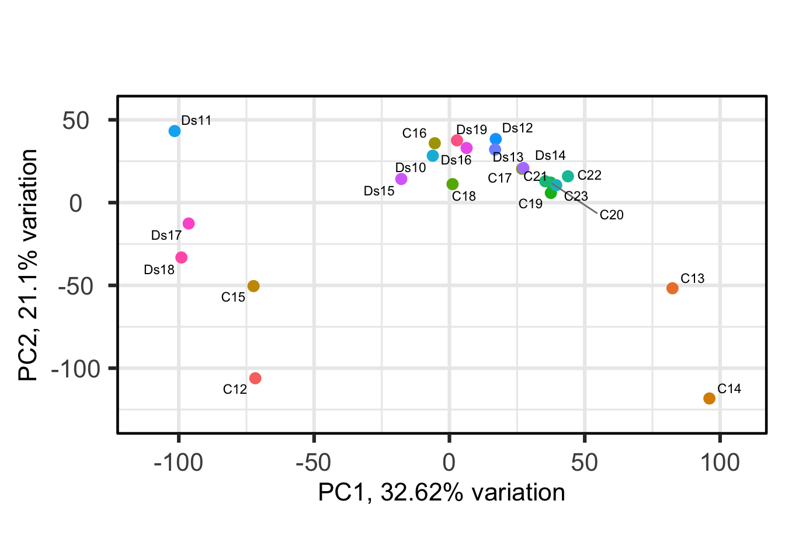
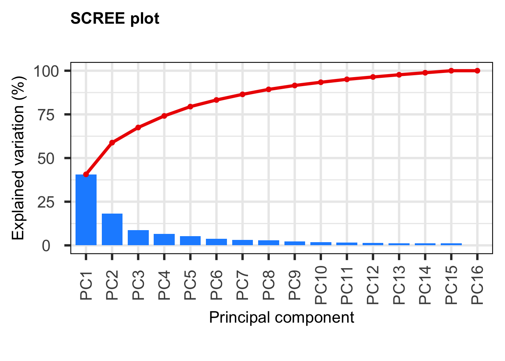
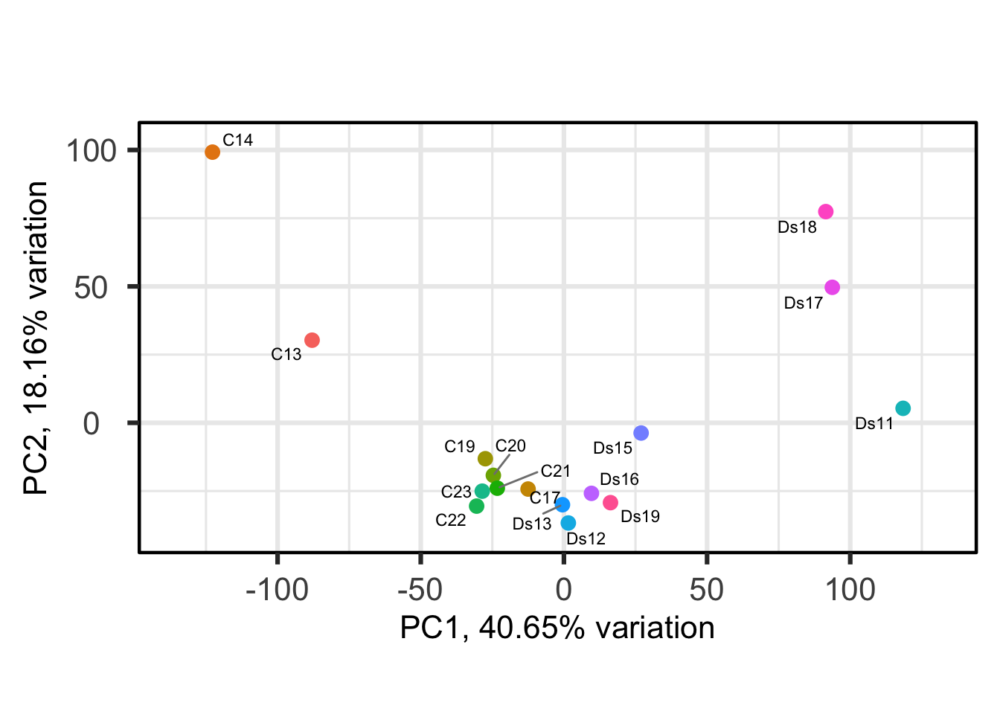
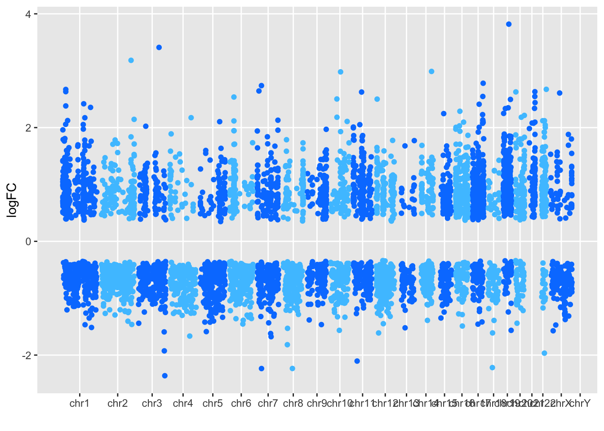
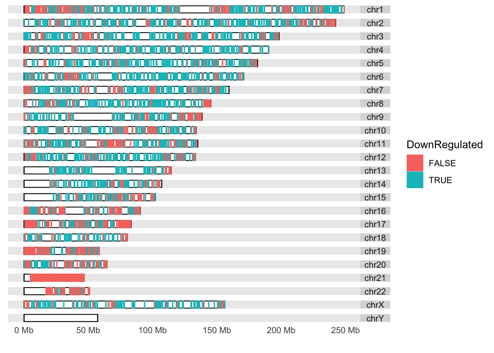

Last updated: 2022-09-15
Checks: 7 0
Knit directory: HumanMultiomics/
This reproducible R Markdown analysis was created with workflowr (version 1.7.0). The Checks tab describes the reproducibility checks that were applied when the results were created. The Past versions tab lists the development history.
Great! Since the R Markdown file has been committed to the Git repository, you know the exact version of the code that produced these results.
Great job! The global environment was empty. Objects defined in the global environment can affect the analysis in your R Markdown file in unknown ways. For reproduciblity it’s best to always run the code in an empty environment.
The command set.seed(20220715) was run prior to running
the code in the R Markdown file. Setting a seed ensures that any results
that rely on randomness, e.g. subsampling or permutations, are
reproducible.
Great job! Recording the operating system, R version, and package versions is critical for reproducibility.
Nice! There were no cached chunks for this analysis, so you can be confident that you successfully produced the results during this run.
Great job! Using relative paths to the files within your workflowr project makes it easier to run your code on other machines.
Great! You are using Git for version control. Tracking code development and connecting the code version to the results is critical for reproducibility.
The results in this page were generated with repository version ad242c4. See the Past versions tab to see a history of the changes made to the R Markdown and HTML files.
Note that you need to be careful to ensure that all relevant files for
the analysis have been committed to Git prior to generating the results
(you can use wflow_publish or
wflow_git_commit). workflowr only checks the R Markdown
file, but you know if there are other scripts or data files that it
depends on. Below is the status of the Git repository when the results
were generated:
Ignored files:
Ignored: .DS_Store
Ignored: .Rhistory
Ignored: .Rproj.user/
Ignored: analysis/.DS_Store
Ignored: data/.DS_Store
Untracked files:
Untracked: DiffExpression_results_cortex.txt
Untracked: DiffExpression_results_cortex_PPMat.txt
Untracked: DiffExpression_results_cortex_PostFC.txt
Untracked: DiffExpression_results_cortex_RealFC.txt
Untracked: DiffExpression_results_cortex_status.txt
Untracked: DiffExpression_results_hippo.txt
Untracked: DiffExpression_results_hippo_PPMat.txt
Untracked: DiffExpression_results_hippo_PostFC.txt
Untracked: DiffExpression_results_hippo_RealFC.txt
Untracked: DiffExpression_results_hippo_status.txt
Untracked: HumanMultiomics.R
Untracked: WGCNA_hippo_genes.Rmd
Untracked: data/GABA_AMPA_family.xlsx
Untracked: data/GeneAnnotation_hippo.csv
Untracked: data/human_cortex_samplesheet.xlsx
Untracked: data/human_cortex_transcripts_protein_coding.txt
Untracked: data/human_cortex_transcripts_protein_coding.xlsx
Untracked: data/human_hippo_samplesheet.xlsx
Untracked: data/human_hippo_transcripts_protein_coding.txt
Untracked: data/human_hippo_transcripts_protein_coding.xlsx
Untracked: data/raw_counts_human_cortex_matrix_coding.txt
Untracked: data/raw_counts_human_hippo_matrix_coding.txt
Untracked: figure/
Untracked: output/cpm_y_cth_filt_coding22_after_PCA.txt
Untracked: output/cpm_y_hth_filt_coding22_after_PCA.txt
Untracked: output/geneInfo_cpm_y_hth_filt_coding22_after_PCA.csv
Untracked: output/results_hippo_RNA.rds
Untracked: results_cortex_RNA.rds
Untracked: results_hippo_RNA.rds
Untracked: sigGenes_cortex.rds
Untracked: sigGenes_hippo.rds
Untracked: topHitshuman_hippo.bed
Note that any generated files, e.g. HTML, png, CSS, etc., are not included in this status report because it is ok for generated content to have uncommitted changes.
These are the previous versions of the repository in which changes were
made to the R Markdown
(analysis/cortex_differential_expression_analysis.Rmd) and
HTML (docs/cortex_differential_expression_analysis.html)
files. If you’ve configured a remote Git repository (see
?wflow_git_remote), click on the hyperlinks in the table
below to view the files as they were in that past version.
| File | Version | Author | Date | Message |
|---|---|---|---|---|
| Rmd | ad242c4 | mohit-rastogi | 2022-09-15 | wflow_publish("analysis/*") |
This is the differential expression analysis from the total RNA sequencing experiment performed on postmortem cortex obtained from Down syndrome and control individuals.
library(ggplot2)
library(dplyr)
library(edgeR)
library(openxlsx)
library(ggrepel)
library(DBI)
library(org.Hs.eg.db)
library("pcaExplorer")
library(TxDb.Hsapiens.UCSC.hg38.knownGene)
library(rtracklayer)
library(ggbio)
library(clusterProfiler)
library(enrichplot)
library(ggridges)
library(karyoploteR)
library(tidyverse)
library(forcats)
library(pathview)
library(ComplexHeatmap)
library(circlize)
library(kableExtra) C12 C13 C14 C15 C16 C17 C18 C19 C20 C21 C22 C23 Ds10
ENSG00000186092 0 0 0 0 0 0 0 0 0 0 0 0 0
ENSG00000284733 0 0 0 0 0 0 0 0 0 0 0 0 0
ENSG00000284662 0 0 0 0 0 0 0 0 0 0 0 0 0
ENSG00000187634 5 4 0 21 61 28 21 15 27 38 23 29 20
ENSG00000188976 266 704 279 566 1561 2487 1438 1547 2030 1593 2350 2031 996
ENSG00000187961 20 35 4 30 149 138 129 164 142 158 181 174 92
Ds11 Ds12 Ds13 Ds14 Ds15 Ds16 Ds17 Ds18 Ds19
ENSG00000186092 0 0 0 0 0 0 0 0 0
ENSG00000284733 0 0 0 0 0 0 0 0 0
ENSG00000284662 0 0 0 0 0 0 0 0 0
ENSG00000187634 63 45 16 36 10 24 50 41 32
ENSG00000188976 1214 1776 1759 1954 897 1112 694 771 1465
ENSG00000187961 361 130 76 148 117 107 123 66 166 [1] Cont Cont Cont Cont Cont Cont Cont Cont Cont Cont Cont Cont DS DS DS
[16] DS DS DS DS DS DS DS
Levels: Cont DS
-- removing the lower 10% of variables based on variance
C13 C14 C17 C19 C20 C21 C22 C23 Ds11 Ds12 Ds13 Ds15 Ds16
ENSG00000186092 0 0 0 0 0 0 0 0 0 0 0 0 0
ENSG00000284733 0 0 0 0 0 0 0 0 0 0 0 0 0
ENSG00000284662 0 0 0 0 0 0 0 0 0 0 0 0 0
ENSG00000187634 4 0 28 15 27 38 23 29 63 45 16 10 24
ENSG00000188976 704 279 2487 1547 2030 1593 2350 2031 1214 1776 1759 897 1112
ENSG00000187961 35 4 138 164 142 158 181 174 361 130 76 117 107
Ds17 Ds18 Ds19
ENSG00000186092 0 0 0
ENSG00000284733 0 0 0
ENSG00000284662 0 0 0
ENSG00000187634 50 41 32
ENSG00000188976 694 771 1465
ENSG00000187961 123 66 166####Perform PCA on the filtered samples
-- removing the lower 10% of variables based on variance
keep_cth_filt_coding2
FALSE TRUE
5787 14181 group lib.size norm.factors
C13 Cont 22838780 0.9494258
C14 Cont 16449030 0.8350646
C17 Cont 34516167 1.0557014
C19 Cont 31663808 0.9980017
C20 Cont 33797811 1.0694944
C21 Cont 31634000 0.9990789
C22 Cont 38044140 1.0283538
C23 Cont 34010695 1.0189124
Ds11 DS 17964976 0.9749882
Ds12 DS 29708146 1.1038969
Ds13 DS 29318225 1.1023692
Ds15 DS 22564390 1.1062550
Ds16 DS 25861208 1.0729509
Ds17 DS 19634177 0.7869030
Ds18 DS 19396795 0.8939199
Ds19 DS 24608395 1.0793916Iteration 1: Re-fitting GLM. Re-estimating trended dispersion.
Re-estimating tagwise dispersion.
Iteration 2: Re-fitting GLM. Re-estimating trended dispersion.
Re-estimating tagwise dispersion.
Iteration 3: Re-fitting GLM. Re-estimating trended dispersion.
Re-estimating tagwise dispersion.
Iteration 4: Re-fitting GLM. Re-estimating trended dispersion.
Re-estimating tagwise dispersion.
Iteration 5: Re-fitting GLM. Re-estimating trended dispersion.
Re-estimating tagwise dispersion.
Iteration 6: Re-fitting GLM. Re-estimating trended dispersion.
Re-estimating tagwise dispersion. group_cth_filt_coding2DS
Down 2779
NotSig 8633
Up 2769'select()' returned 1:many mapping between keys and columnsGRanges object with 5531 ranges and 12 metadata columns:
seqnames ranges strand | logFC logCPM LR
<Rle> <IRanges> <Rle> | <numeric> <numeric> <numeric>
627 chr11 27654893-27722058 - | -2.10525 3.67477 65.3584
81543 chr21 44455510-44462196 + | 2.54708 1.46346 61.1630
1356 chr3 149162410-149221829 - | 3.40960 4.10031 61.1510
64114 chr2 218274197-218292586 - | 1.83696 5.90933 61.0578
25966 chr21 41885112-41954018 - | 1.20996 5.96190 56.4304
... ... ... ... . ... ... ...
9900 chr1 149903318-149917844 - | -0.592777 7.83472 5.45569
308 chr4 121667946-121696995 - | 0.403850 5.66521 5.45491
6480 chr3 186930325-187078553 + | 0.413191 5.69142 5.45285
10645 chr12 121237675-121298308 - | -0.450753 8.05114 5.45270
23592 chr12 65169583-65248355 + | -0.344752 5.31480 5.45104
PValue FDR ENSEMBL ENTREZID SYMBOL
<numeric> <numeric> <character> <character> <character>
627 6.24422e-16 8.85493e-12 ENSG00000176697 627 BDNF
81543 5.25394e-15 1.96490e-11 ENSG00000160233 81543 LRRC3
1356 5.28596e-15 1.96490e-11 ENSG00000047457 1356 CP
64114 5.54233e-15 1.96490e-11 ENSG00000135926 64114 TMBIM1
25966 5.82241e-14 1.48993e-10 ENSG00000157617 25966 C2CD2
... ... ... ... ... ...
9900 0.0195047 0.0498910 ENSG00000159164 9900 SV2A
308 0.0195134 0.0499044 ENSG00000164111 308 ANXA5
6480 0.0195364 0.0499494 ENSG00000073849 6480 ST6GAL1
10645 0.0195381 0.0499494 ENSG00000110931 10645 CAMKK2
23592 0.0195567 0.0499880 ENSG00000174106 23592 LEMD3
GENENAME CHR UNIPROT ALIAS
<character> <character> <character> <character>
627 brain derived neurot.. 11 A0A0E3SU01 ANON2
81543 leucine rich repeat .. 21 Q9BY71 C21orf102
1356 ceruloplasmin 3 A5PL27 CP-2
64114 transmembrane BAX in.. 2 A0A024R472 LFG3
25966 C2 calcium dependent.. 21 Q9Y426 C21orf25
... ... ... ... ...
9900 synaptic vesicle gly.. 1 B4E000 SV2
308 annexin A5 4 P08758 ANX5
6480 ST6 beta-galactoside.. 3 P15907 SIAT1
10645 calcium/calmodulin d.. 12 A0A024RBQ0 CAMKK
23592 LEM domain containin.. 12 Q9Y2U8 MAN1
-------
seqinfo: 595 sequences (1 circular) from hg38 genomeusing coord:genome to parse x scale
Scale for 'x' is already present. Adding another scale for 'x', which will
replace the existing scale.Scale for 'x' is already present. Adding another scale for 'x', which will
replace the existing scale.
sessionInfo()R version 4.1.0 (2021-05-18)
Platform: x86_64-apple-darwin17.0 (64-bit)
Running under: macOS Catalina 10.15.7
Matrix products: default
BLAS: /Library/Frameworks/R.framework/Versions/4.1/Resources/lib/libRblas.dylib
LAPACK: /Library/Frameworks/R.framework/Versions/4.1/Resources/lib/libRlapack.dylib
locale:
[1] en_US.UTF-8/en_US.UTF-8/en_US.UTF-8/C/en_US.UTF-8/en_US.UTF-8
attached base packages:
[1] grid stats4 stats graphics grDevices utils datasets
[8] methods base
other attached packages:
[1] kableExtra_1.3.4
[2] circlize_0.4.15
[3] ComplexHeatmap_2.8.0
[4] pathview_1.32.0
[5] forcats_0.5.2
[6] stringr_1.4.1
[7] purrr_0.3.4
[8] readr_2.1.2
[9] tidyr_1.2.1
[10] tibble_3.1.8
[11] tidyverse_1.3.2
[12] karyoploteR_1.18.0
[13] regioneR_1.24.0
[14] ggridges_0.5.3
[15] enrichplot_1.12.3
[16] clusterProfiler_4.0.5
[17] ggbio_1.40.0
[18] rtracklayer_1.52.1
[19] TxDb.Hsapiens.UCSC.hg38.knownGene_3.13.0
[20] GenomicFeatures_1.44.2
[21] GenomicRanges_1.44.0
[22] GenomeInfoDb_1.28.4
[23] pcaExplorer_2.18.0
[24] org.Hs.eg.db_3.13.0
[25] AnnotationDbi_1.54.1
[26] IRanges_2.28.0
[27] S4Vectors_0.32.3
[28] Biobase_2.54.0
[29] BiocGenerics_0.40.0
[30] DBI_1.1.3
[31] ggrepel_0.9.1
[32] openxlsx_4.2.5
[33] edgeR_3.34.1
[34] limma_3.50.1
[35] dplyr_1.0.10
[36] ggplot2_3.3.6
[37] workflowr_1.7.0
loaded via a namespace (and not attached):
[1] rsvd_1.0.5 svglite_2.1.0
[3] Hmisc_4.7-1 ps_1.7.1
[5] Rsamtools_2.8.0 foreach_1.5.2
[7] rprojroot_2.0.3 crayon_1.5.1
[9] MASS_7.3-58.1 nlme_3.1-159
[11] backports_1.4.1 reprex_2.0.2
[13] GOSemSim_2.18.1 rlang_1.0.5
[15] XVector_0.32.0 readxl_1.4.1
[17] irlba_2.3.5 SparseM_1.81
[19] callr_3.7.2 filelock_1.0.2
[21] GOstats_2.58.0 BiocParallel_1.28.3
[23] rjson_0.2.21 bit64_4.0.5
[25] glue_1.6.2 pheatmap_1.0.12
[27] rngtools_1.5.2 parallel_4.1.0
[29] processx_3.7.0 shinyAce_0.4.2
[31] shinydashboard_0.7.2 DOSE_3.18.3
[33] haven_2.5.1 tidyselect_1.1.2
[35] SummarizedExperiment_1.22.0 XML_3.99-0.10
[37] GenomicAlignments_1.28.0 xtable_1.8-4
[39] magrittr_2.0.3 evaluate_0.16
[41] cli_3.4.0 zlibbioc_1.40.0
[43] rstudioapi_0.14 whisker_0.4
[45] bslib_0.4.0 rpart_4.1.16
[47] fastmatch_1.1-3 ensembldb_2.16.4
[49] treeio_1.16.2 shiny_1.7.2
[51] BiocSingular_1.8.1 xfun_0.33
[53] clue_0.3-61 cluster_2.1.4
[55] tidygraph_1.2.2 TSP_1.2-1
[57] KEGGREST_1.32.0 biovizBase_1.40.0
[59] threejs_0.3.3 ape_5.6-2
[61] dendextend_1.16.0 Biostrings_2.60.2
[63] png_0.1-7 reshape_0.8.9
[65] withr_2.5.0 shinyBS_0.61.1
[67] bitops_1.0-7 ggforce_0.3.4
[69] RBGL_1.68.0 plyr_1.8.7
[71] cellranger_1.1.0 GSEABase_1.54.0
[73] AnnotationFilter_1.16.0 dqrng_0.3.0
[75] pillar_1.8.1 GlobalOptions_0.1.2
[77] cachem_1.0.6 fs_1.5.2
[79] GetoptLong_1.0.5 DelayedMatrixStats_1.14.3
[81] vctrs_0.4.1 ellipsis_0.3.2
[83] generics_0.1.3 NMF_0.24.0
[85] tools_4.1.0 foreign_0.8-82
[87] munsell_0.5.0 tweenr_2.0.2
[89] fgsea_1.18.0 DelayedArray_0.18.0
[91] fastmap_1.1.0 compiler_4.1.0
[93] httpuv_1.6.6 pkgmaker_0.32.2
[95] plotly_4.10.0 GenomeInfoDbData_1.2.6
[97] gridExtra_2.3 lattice_0.20-45
[99] deldir_1.0-6 AnnotationForge_1.34.1
[101] utf8_1.2.2 later_1.3.0
[103] BiocFileCache_2.0.0 jsonlite_1.8.0
[105] GGally_2.1.2 scales_1.2.1
[107] ScaledMatrix_1.0.0 graph_1.70.0
[109] sparseMatrixStats_1.4.2 tidytree_0.4.0
[111] genefilter_1.74.1 lazyeval_0.2.2
[113] promises_1.2.0.1 doParallel_1.0.17
[115] latticeExtra_0.6-30 checkmate_2.1.0
[117] rmarkdown_2.16 cowplot_1.1.1
[119] webshot_0.5.3 dichromat_2.0-0.1
[121] downloader_0.4 BSgenome_1.60.0
[123] igraph_1.3.4 survival_3.4-0
[125] yaml_2.3.5 systemfonts_1.0.4
[127] htmltools_0.5.3 memoise_2.0.1
[129] VariantAnnotation_1.38.0 BiocIO_1.2.0
[131] locfit_1.5-9.6 seriation_1.3.6
[133] PCAtools_2.4.0 graphlayouts_0.8.1
[135] viridisLite_0.4.1 digest_0.6.29
[137] assertthat_0.2.1 mime_0.12
[139] rappdirs_0.3.3 registry_0.5-1
[141] RSQLite_2.2.17 yulab.utils_0.0.5
[143] data.table_1.14.2 blob_1.2.3
[145] labeling_0.4.2 splines_4.1.0
[147] Formula_1.2-4 Cairo_1.6-0
[149] googledrive_2.0.0 OrganismDbi_1.34.0
[151] ProtGenerics_1.26.0 RCurl_1.98-1.8
[153] broom_1.0.1 hms_1.1.2
[155] modelr_0.1.9 colorspace_2.0-3
[157] base64enc_0.1-3 BiocManager_1.30.18
[159] shape_1.4.6 aplot_0.1.7
[161] nnet_7.3-17 sass_0.4.2
[163] Rcpp_1.0.9 fansi_1.0.3
[165] tzdb_0.3.0 R6_2.5.1
[167] lifecycle_1.0.2 zip_2.2.1
[169] curl_4.3.2 googlesheets4_1.0.1
[171] jquerylib_0.1.4 DO.db_2.9
[173] Matrix_1.4-1 qvalue_2.24.0
[175] RColorBrewer_1.1-3 iterators_1.0.14
[177] topGO_2.44.0 htmlwidgets_1.5.4
[179] bamsignals_1.24.0 beachmat_2.8.1
[181] polyclip_1.10-0 biomaRt_2.48.3
[183] crosstalk_1.2.0 shadowtext_0.1.2
[185] gridGraphics_0.5-1 rvest_1.0.3
[187] htmlTable_2.4.1 patchwork_1.1.2
[189] KEGGgraph_1.52.0 codetools_0.2-18
[191] matrixStats_0.62.0 lubridate_1.8.0
[193] GO.db_3.13.0 getPass_0.2-2
[195] prettyunits_1.1.1 dbplyr_2.2.1
[197] gridBase_0.4-7 gtable_0.3.1
[199] git2r_0.30.1 highr_0.9
[201] ggfun_0.0.7 httr_1.4.4
[203] stringi_1.7.8 progress_1.2.2
[205] reshape2_1.4.4 farver_2.1.1
[207] heatmaply_1.3.0 annotate_1.70.0
[209] viridis_0.6.2 Rgraphviz_2.36.0
[211] ggtree_3.0.4 DT_0.25.1
[213] xml2_1.3.3 bezier_1.1.2
[215] restfulr_0.0.15 interp_1.1-3
[217] geneplotter_1.70.0 ggplotify_0.1.0
[219] Category_2.58.0 DESeq2_1.32.0
[221] bit_4.0.4 scatterpie_0.1.8
[223] jpeg_0.1-9 MatrixGenerics_1.4.3
[225] ggraph_2.0.6 pkgconfig_2.0.3
[227] gargle_1.2.1 knitr_1.40